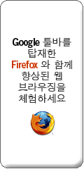

2005-12-02 09:27:29
오랜만에 adsense 메일을 열어보았다. 딱히 수입을 올리기 보다도 홈페이지 뷰 카운터를 위해서 사용하고 있었는데, 이번에 새로 추가된 기능을 보니 '추천' 이라는게 있었다. '무슨 피라미드 업체인가 -_-;' 라는 생각이 문득들었으나, 뭐 어차피 구글도 하나의 업체이니 수입을 올리고 싶으리라.
그런데 재미있는것은 추천의 일부분에 '구글바를 포함한 firefox 다운로드' 버튼을 달 수 있게 하는것이 있었다. 구글이 이정도까지 firefox 를 지원할 줄은 생각도 못했는데, 마치 firefox 를 구글의 전용 브라우저가 아닐까하는 생각도 살짝 들었다.
여튼 재미있는 일을 하는 구글이다. 담엔 또 어떤 일을 할까나.